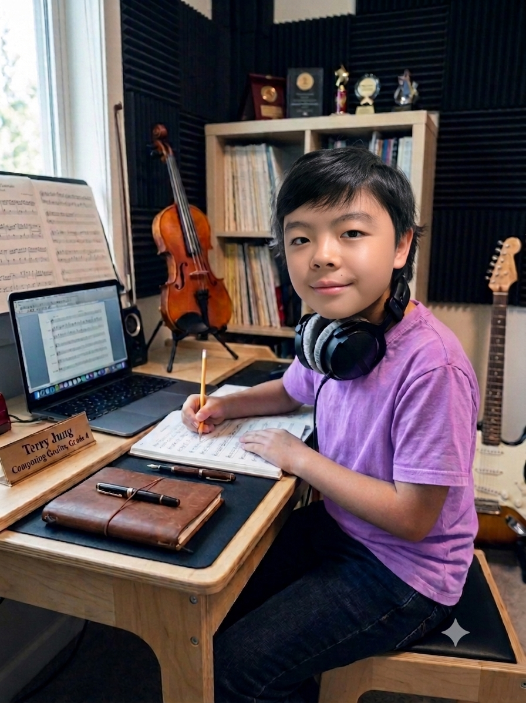
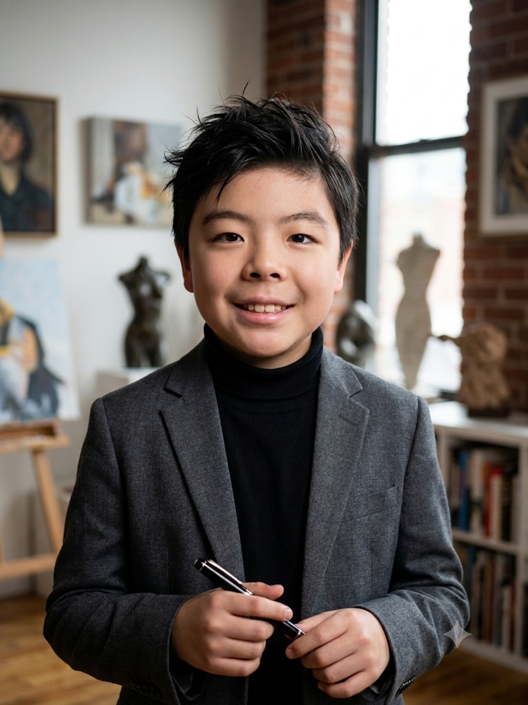
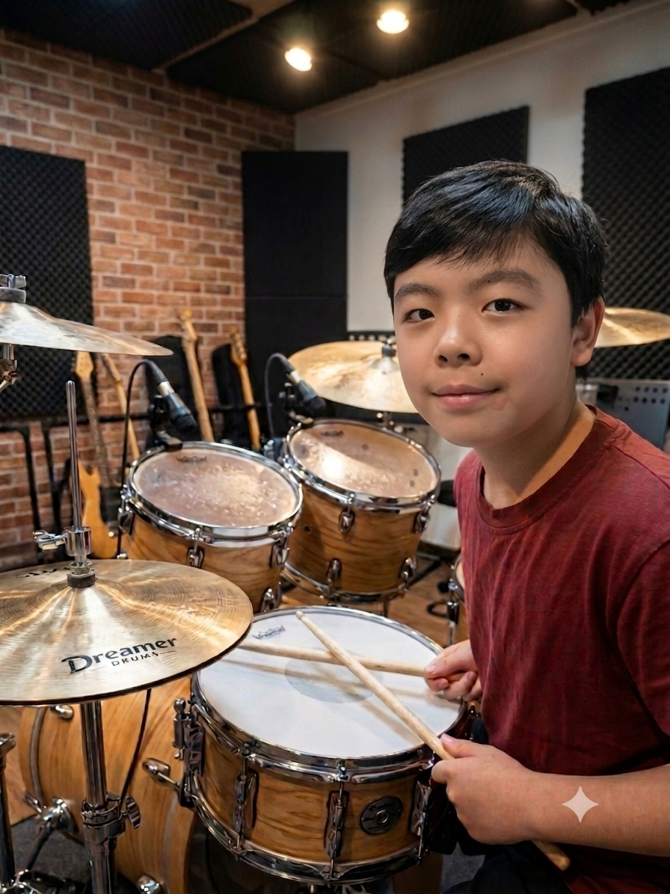

● Out Now
● Out Now
The Counterattack Of Nature
초등학생 작곡가의 첫 번째 클래식 크로스오버 EP.
01유독가스의 역습
02산성비의 역습
순수한 상상력에서 출발한 이야기를 소리로 기록하는 어린 작곡가. 피아노에서 시작해 우주와 자연, 시간을 넘나드는 음악적 세계를 짓습니다.
“어린아이가 만들었다고 믿기 어려운 깊은 감성과 구조적 창의성.”
정태성(Terry Jung)은 클래식을 기반으로 CCM, 크로스오버, 일렉트로니카를 넘나드는 작곡가이자 피아니스트입니다. 머릿속의 장면과 이야기를 화성과 리듬으로 옮기며, 나이를 가늠하기 어려운 자신만의 음악 세계를 한 곡씩 기록해 나가고 있습니다.



● Out Now
초등학생 작곡가의 첫 번째 클래식 크로스오버 EP.
 ● Out Now
● Out Now
꿈꾸는 소년 Terry Jung이 일렉트로니카로 다시 그리는 순수 상상력의 장대한 파노라마의 첫 번째 앨범.
시편 146편의 말씀을 깊이 있는 선율로 담아낸 두 번째 앨범.